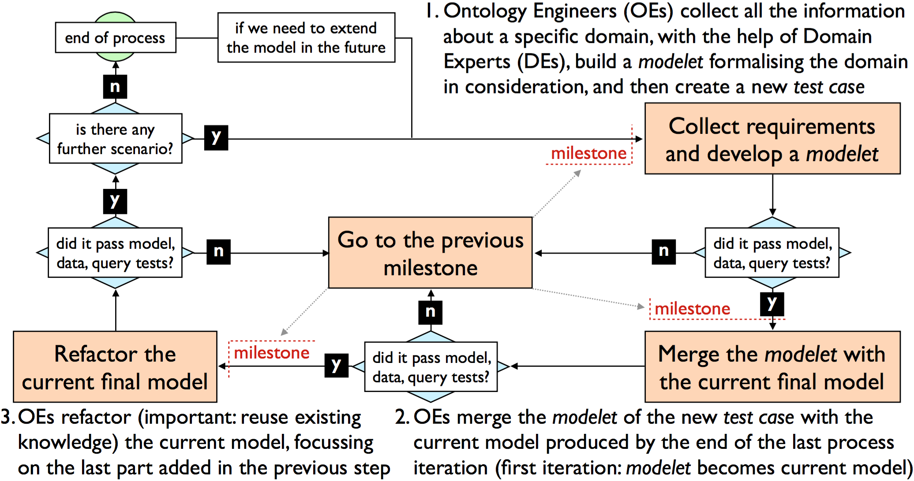

In this paper we introduce SAMOD, a.k.a. Simplified Agile Methodology for Ontology Development, a novel agile methodology for the development of ontologies by means of small steps of an iterative workflow that focuses on creating well-developed and documented models starting from exemplar domain descriptions.
How to cite SAMOD in scholarly works: Peroni, S. (2016). A Simplified Agile Methodology for Ontology Development. In Proceedings of the 13th OWL: Experiences and Directions Workshop and 5th OWL reasoner evaluation workshop (OWLED-ORE 2016). https://w3id.org/people/essepuntato/papers/samod-owled2016.html
Methodology document (this document): Peroni, S. (2016). SAMOD: an agile methodology for the development of ontologies. figshare. http://dx.doi.org/10.6084/m9.figshare.3189769
Developing ontologies is not a straightforward operation. In fact, this assumption is implicitly demonstrated by the number of ontology development processes that have been developed in last 30 years, that have their roots in the knowledge and software engineering domains. Moreover, the choice of the right development process to follow is a delicate task, since it may vary according to a large amount of variables, such as the intrinsic complexity of domain to be modelled, the context in which the model will be used (enterprise, social community, high-profile academic/industrial project, private needs, etc.), the amount of time available for the development, and the technological hostility and the feeling of unfruitfulness shown by the final customers against both the model developed and the process adopted for the development.
In the past twenty years, the software engineering domain has seen the proposal of new agile methodologies for software development, in contrast with highly-disciplined processes that have characterised such discipline from its beginning. Following this trend, recently agile development methodologies have been proposed in the field of ontology engineering as well. In fact, several quick-and-iterative ontology development processes have been introduced, e.g., , which could be preferred when the ontology to develop should be composed by a limited amount of ontological entities – while the use of highly-structured and strongly-founded methodologies remain valid and, maybe, mandatory to solve and model incredibly complex enterprise projects. Moreover, one of the most important advantages when using agile approaches for developing ontologies is that they usually tend to decrease to the necessary the interaction between ontology developers/engineers and domain experts/customers.
Of course, the above reasons are not the only ones that motivate developers to prefer a particular methodology rather than others. The intended usage of the ontology to develop must be taken into account as well. Usually, this intended usage lies between the following extremes:
on the one hand, reclaimed from artificial intelligent fields, the underground logic behind classes and relations represents the real value of an ontology;
on the other hand, considering database-like applications, ontologies are used for defining and then describing a general structure to organise and retrieve Web data – or, more generally, just data.
Differently from the first years of the Semantic Web era, in which a lot of research in the field concerned AI-like applications, recently the interest about (big and linked) data has grown and is still growing, particularly by means of DBPedia, the Linking Open Data Community Project and other collateral projects such as data.gov and data.gov.uk.
Recent applications are now using well-known (and even simple) ontologies to understand and organise these kinds of data. At the same time, new ontologies are built every day for the same purpose. Data are becoming the real object of discourse, while the formal semantics behind ontologies is thus relegated to a secondary role.
Taking into consideration (even exemplar or ad hoc) data during the development is a fundamental feature of an ontology engineering process and should be a prerequisite of each methodology. Data must be intrinsically and explicitly presented as one of the most important part of the methodology itself.
Mainly, the reasons for being data-centric when developing an ontology are:
avoid inconsistencies – a common mistake when developing a model is to make a TBox that is consistent if considered alone and that becomes inconsistent when we define an ABox for it, even if all the classes and properties are completely satisfiable. Using real-world data, as exemplar of a particular scenario of the domain we are modelling, can definitely avoid this problem;
self-explanatory and easy-understandable models – trying to implement a particular real-world and significative scenario related to a model by using data allows one to better understand if each TBox entity has a meaningful name that fits for describing clearly the intent and the usage of the entity itself. This makes users understanding a model without spending a lot of effort for reading any comment or documentation. The use of data as part of the ontology development obliges ontology engineers and developers to think about the possible ways users will understand and use the ontology they are developing, in particular the very first time they look at it;
examples of usage – producing data within the development process means to have a bunch of exemplars that describe the usage of the model in real-world scenarios. This kind of documentation, implicitly, allows users to apply a learn-by-example approach in understanding the model and during their initial skill acquisition phase.
In this paper we introduce SAMOD (Simplified Agile Methodology for Ontology Development), a novel agile methodology, inspired to , for the development of ontologies. The methodology is organised in small steps within an iterative process that focuses on creating well-developed and documented models by using significative exemplar of data so as to produce ontologies that are always ready-to-be-used and easily-understandable by humans (i.e., the possible customers) without spending a lot of effort. Described with details in the following sections, SAMOD is the result of our dedication to the development of ontologies in the past eight years. While the first draft of the methodology has been proposed in 2010 as starting point for the development of the Semantic Publishing and Referencing Ontologies, it has been revised several times so as to come to the current version presented in this paper.
A preliminary introduction to the terminology we use in SAMOD may be very helpful for the reader. In particular, it is useful to clarify the meaning of some terms that occur quite often within the SAMOD process we will introduce in .
The kinds of people involved in SAMOD are domain experts and ontology engineers.
A domain expert, or DE, is a professional with expertise in the domain to be described by the ontology. However, usually she does not have any technical knowledge in languages or tools necessary for the developing the ontology. She is mainly responsible to define, often in natural language, a detailed description of domain that has to be modelled.
An ontology engineer, or OE, is a person who, starting from an informal and precise description of a particular problem or domain provided by DEs, construct meaningful and useful ontologies by using a particular formal language, such as OWL 2 .
In this section we introduce all the terms that will be used in describing our methodology.
A motivating scenario is a small story problem that provides a short description and a set of informal and intuitive examples to the problem it talks about. Usually, it implicitly bring with it an informal and intended semantics hidden behind natural language descriptions. In our methodology, a motivation scenario is composed by:
a name that characterises it;
a natural language description that presents a problem to address;
one or more examples according to the description.
An informal competency question is a natural language question that represents an informal requirement within a particular domain. Usually, in order to address all the requirements of the domain in consideration, a set of more than one competency question is needed. In this case, the set must be organised hierarchically: we will have higher-level competency questions that require answers to other much lower-level questions. In our methodology, each informal competency question is composed by:
an unique identifier;
a natural language question;
the kind of outcome expected as answer;
some exemplar answers considering the examples provided in the related motivating scenario ;
a list of identifiers referring to higher-level informal competency questions requiring this one, if any.
A glossary of terms is a list of term-definition pairs related to terms that are commonly used for talking about the domain in consideration. The term in each pair may be composed by one or more words or verbs, or even by a brief sentence, while the related definition is a natural language explanation of the meaning of such term. The terminology used for naming terms and for describing them must be as close as possible to the domain language.
As anticipated in , our methodology prescribes an iterative process which aims to build the final model through a series of small steps. At the end of each iteration a particular preliminary version of the final model is released. Within a particular iteration in, the current model is the version of the final model released at the end of the iteration in-1.
A modelet is a stand-alone model describing a particular domain. By definition, a modelet does not include entities from other models and it is not included in other models.
A test case Tn, produced in the nth iteration of the process, is a sextuple (MS, CQ, GoT, TBox, ABox, SQ) where:
MS is a motivating scenario;
CQ is a list of scenario-related informal competency questions;
GoT a glossary of terms for the domain addressed by the motivating scenario;
TBox is a formal model written in a proper language, such as OWL 2, implementing the description introduced in the motivating scenario;
ABox an exemplar dataset written in a proper language, such as OWL 2, implementing all the examples described in the motivating scenario according to the TBox;
SQ a set of queries written in a formal language, such as SPARQL 1.1 , formalising the informal competency questions.
A bag of test cases (BoT) is a set of test cases.
Given as input a motivating scenario, the model formalising it and the related glossary of terms – a model test aims at checking the validity of the model against formal and rhetorical requirements, where:
checking for formal requirements means understanding whether the model is consistent and, if needed, whether it also complies with appropriate unit tests ;
checking for rhetorical requirements means understanding whether the model covers the related motivating scenario and whether the vocabulary used by the model is appropriate.
Given as input a motivating scenario, the model (TBox) formalising it and a dataset (ABox) built according to the model, and considering the examples described in the motivating scenario, a data test aims at checking the validity of the model and the dataset and against formal and rhetorical requirements, where:
checking for formal requirements means understanding whether the model (TBox) is still consistent when considering the exemplar dataset (ABox);
checking for rhetorical requirements means understanding whether the dataset completely describes all the examples accompanying the motivating scenario, and whether the model is enough self-explanatory to be used quickly by humans for building datasets without spending a lot of effort in understanding it.
Given as input a model (TBox), a related dataset (ABox), a set of informal competency questions, and a set formal queries written in SPARQL, each mapping a particular informal competency question, a query test aims at checking the validity of the model, the dataset and each SPARQL query against formal and rhetorical requirements, where:
checking for formal requirements means understanding whether each SPARQL query is well-formed and can correctly run on the TBox+ABox;
checking for rhetorical requirements means understanding whether each informal competency question is mapped into an appropriate SPARQL query and whether, running each of them upon the TBox+ABox, the result conforms to the expected outcome of each informal competency question and in the ABox.
SAMOD is based on the following three iterative steps (briefly summarised in ) – where each step ends with the release of a snapshot of the current state of the process called milestone:
OEs collect all the information about a specific domain, with the help of DEs, in order to build a modelet formalising the domain in consideration, following certain ontology development principles, and then create a new test case that includes the modelet. If everything works fine (i.e., all model, data and query test are passed) release a milestone and proceed;
OEs merge the modelet of the new test case with the current model produced by the end of the last process iteration, and consequently update all the test cases in BoT specifying the new current model as TBox. If everything works fine (i.e., all model, data and query test are passed according to their formal requirements only) release a milestone and proceed;
OEs refactor the current model, in particular focussing on the last part added in the previous step, taking into account good practices for ontology development processes. If everything works fine (i.e., all model, data and query test are passed) release a milestone. In case there is another motivating scenario to be addressed, iterate the process, otherwise stop.

The next sections elaborate on those steps introducing a real example considering a generic iteration in.
OEs and DEs work together to write down a motivating scenario MSn, being as close as possible to the language DEs commonly use for talking about the domain. An example of motivating scenario is illustrated in .
| Name |
Vagueness of the TBox entities of an ontology |
|---|---|
| Description |
Vagueness is a common human knowledge and language phenomenon, typically manifested by terms and concepts like High, Expert, Bad, Near etc. In an OWL ontology vagueness may appear in the definitions of classes, properties, datatypes and individuals. For these entities a more explicit description of the nature and characteristics of their vagueness/non-vagueness is required. Analysing and describing the nature of vagueness/non-vagueness in ontological entities is subjective activity, since it is often a personal interpretation of someone (a person or, more generally, an agent). Vagueness can be described according to at least two complementary types referring to quantitative or qualitative connotations respectively. The quantitative aspect of vagueness concerns the (real or apparent) lack of precise boundaries defining an entity along one or more specific dimensions. The qualitative aspect of vagueness concerns the identification of such other discriminants of which boundaries are not quantifiable in any precise way. Either a vagueness description, that specifies always a type, or a non-vagueness description provides at least a justification (defined either as natural language text, an entity or a more complex logic formula, or any combination of them) that motivates a specific aspect of why an entity should be intended as vague/non-vague. Multiple justifications are possible for the same description. The annotation of an entity with information about its vagueness is a particular act of tagging done by someone (i.e., an agent) who associates a description of vagueness/non-vagueness (called the body of the annotation) to the entity in consideration (called the target of the annotation). |
| Example 1 |
Silvio Peroni thinks that the class TallPerson is vague since there is no way to define a crisp height threshold that may separate tall from non-tall people. Panos Alexopoulos, on the other hand, considers someone as tall when his/her height is at least 190cm. Thus, for Panos, the class TallPerson is not vague. |
| Example 2 |
In an company ontology, the class StrategicClient is considered vague. However, the company's R&D Director believes that for a client to be classified as strategic, the amount of its R&D budget should be the only factor to be considered. Thus according to him/her the vague class StrategicClient has quantitative vagueness and the dimension is the amount of R&D budget. On the other hand, the Operations Manager believes that a client is strategic when he has a long-term commitment to the company. In other words, the vague class StrategicClient has quantitative vagueness and the dimension is the duration of the contract. Finally, the company's CEO thinks that StrategicClient is vague from a qualitative point of view. In particular, although there are several criteria one may consider necessary for being expert (e.g. a long-standing relation, high project budgets, etc), it's not possible to determine which of these are sufficient. |
Given a motivating scenario, OEs and DEs should produce a set of informal competency questions CQn, each of them identified appropriately. An example of an informal competency question, formulated starting from the motivating scenario in , is illustrated in .
| Identifier |
3 |
|---|---|
| Question |
What are all the entities that are characterised by a specific vagueness type? |
| Outcome |
The list of all the pairs of entity and vagueness type. |
| Example |
StrategicClient, quantitative StrategicClient, qualitative |
| Depends on |
1 |
Now, having both a motivating scenario and a list of informal competency questions, KEs and DEs write down a glossary of terms GoTn. An example of glossary of terms is illustrated in .
| Term | Definition |
|---|---|
|
annotation of vagueness/non-vagueness |
The annotation of an ontological entity with information about its vagueness is a particular act of tagging done by someone (i.e., an agent) who associates a description of vagueness/non-vagueness (called the body of the annotation) to the entity in consideration (called the target of the annotation). |
|
agent |
The agent who tags an ontology entity with a vagueness/non-vagueness description. |
|
description of non-vagueness |
The descriptive characterisation of non-vagueness to associate to an ontological entity by means of an annotation. It provides at least one justification for considering the target ontological entity non-vague. This description is primarily meant to be used for entities that would typically be considered vague but which, for some reason, in the particular ontology are not. |
|
description of vagueness |
The descriptive characterisation of vagueness to associate to an ontological entity by means of an annotation. It specifies a vagueness type and provides at least one justification for considering the target ontological entity vague. |
|
vagueness type |
A particular kind of vagueness that characterises the entity. |
|
quantitative vagueness |
A vagueness type that concerns the (real or apparent) lack of precise boundaries defining an entity along one or more specific dimensions. |
|
qualitative vagueness |
A vagueness type that concerns the identification of such other discriminants of which boundaries are not quantifiable in any precise way. |
|
justification for vagueness/non-vagueness description |
A justification that explains one possible reason behind a vagueness/non-vagueness description. It is defined either as natural language text, an entity, a more complex logic formula, or any combination of them. |
|
has natural language text |
The natural language text defining the body of a justification. |
|
has entity |
The entity defining the body of a justification. |
|
has logic formula |
The logic formula defining the body of a justification. |
The remaining part of this step is led by OEs only , who are responsible of developing a modelet according to the motivating scenario, the informal competency questions and the glossary of terms .
In doing that work, they must strictly follow the following principles:
Keep it small. Keeping the number of developed ontology entities small is essential when developing an ontology. In fact, by making small changes (and retesting frequently, as our framework prescribes), one always has a good idea of what change has caused an error in the model . Moreover, according to Miller , averagely OEm cannot hold in working memory more than a small number of object. Thus, OEm should define at most N classes, N individuals, N attributes (i.e., data properties) and N relations (i.e., object properties), where N is the Miller's magic number 7 ± 2
.
Use patterns. In thinking what is the best way to model a particular aspect of the domain, OEm should take into consideration existing knowledge. In particular, we strongly encourage to look at documented patterns – the Semantic Web Best Practices and Deployment Working Group page and the Ontology Design Patterns portal are both valuable examples – and at widely-adopted Semantic Web vocabularies – such as FOAF for people, SIOC for social communities, and so on.
Middle-out development. Defining firstly the most relevant concepts (the basic concepts) and latterly adding the most abstract and most concrete ones, the middle-out approach allows one to avoid unnecessary effort during the development because detail arises only as necessary, by adding sub- and super-classes to the basic concepts. Moreover, this approach, if used properly, tends to produce much more stable ontologies, as stated in .
Keep it simple. The modelet must be designed according to the information obtained previously (motivating scenario, informal competency questions, glossary of terms) in an as quick as possible way, spending the minimum effort and without adding any unnecessary semantic structure. In particular, do not think about inference at this stage, while think about describing the motivating scenario fully.
Self-explanatory entities. The aim of each ontological entity must be understandable by humans simply looking at its local name (i.e., the last part of the entity IRI). Therefore, no labels and comments have to be added at this stage and all the entity IRIs must not be opaque. In particular, class local names has to be capitalised (e.g., Justification) and in camel-case notation if composed by more than one word (e.g., DescriptionOfVagueness). Property local names has to be non-capitalised and in camel-case notation if composed by more than one word; moreover, each property local name must start with a verb (e.g., wasAttributedTo) and, in case of data properties, it has to be followed by the name of the object referred (e.g., hasNaturalLanguageText). Individual local names must be non-capitalised (e.g., ceo) and dash-separated if composed by more than one word (quantitative-vagueness).
The goal of OEm is to develop a modeletn, eventually starting from a graphical representation written in a proper visual language, such as UML , E/R model and Graffoo , so as to convert it automatically in OWL by means of appropriate tools, e.g., DiTTO .
Starting from the OWL version modeletn, OEs proceed in four phases:
run a model test on modeletn. If it succeeds, then
create an exemplar dataset ABoxn that formalises all the examples introduced in the motivating scenario according to modeletn. Then, it runs a data test and, if succeeds, then
write formal queries SQn as many informal competency questions related to the motivating scenario. Then, it runs a query test and, if it succeeds, then
create a new test case Tn = (MSn, CQn, GoTn, modeletn, ABoxn, SQn) and add it in BoT.
When running the model test, the data test and the query test, it is possible to use any appropriate available software to support the task, such as reasoners (Pellet, HermiT) and query engines (Jena, Sesame).
Any failure of any test that is considered a serious issue by all the OEs results in getting back to the more recent milestone. It is worth mentioning that an exception should be also arisen if OEs think that the motivating scenario MSn is to big to be covered by one only iteration of the process. In this case, it may be necessary to re-schedule the whole iteration, for example split adequately the motivating scenario in two new ones.
At this stage, OEs merge modeletn, included in the new test case Tn, with the current model, i.e., the version of the final model released at the end of the previous iteration (i.e., in-1). OEs have to proceed in three consecutive steps:
to define a new model TBoxn merging of the current model with modeletn. Namely, OEs must add all the axioms from the current model and modeletn to TBoxn and then collapse semantically-identical entities, e.g., those that have similar local names and that represent the same entity from a semantic point of view (e.g., Person and HumanBeing);
to update all the test cases in BoT, swapping the TBox of each test case with TBoxn and refactoring each ABox and SQ according to the new entity names if needed, so as to refer to the more recent model;
to run the model test, the data test and the query test on all the test cases in BoT, according to their formal requirements only;
to set TBoxn as the new current model.
Any serious failure of any test, that means something went bad in updating the test cases in BoT, results in getting back to a previous milestone. In this case, OEs have to consider the more recent milestones, if they think there was a mistake in a procedure of this step, or, the milestones before, if the failure is demonstrably given by any of the components of the new test case Tn.
In the last step, OEs work to refactor the current model, shared among all the test cases in BoT, and, accordingly, each ABox and SQ of each test case, if needed. In doing that task, OEs must strictly follow the following principles:
Reuse existing knowledge. Reusing concepts and relations defined in other models is encouraged and often labelled as a common good practice . The reuse can result either in including external entities in the current model as they are or in providing an alignment or an harmonisation with another model.
Document it. Adding annotations – i.e., labels (i.e., rdfs:label), comments (i.e., rdfs:comment), and provenance information (i.e., rdfs:isDefinedBy) – on ontological entities, so as to provide natural language descriptions of them, using at least one language (e.g., English). It is an important aspect to take into consideration, since there are several tools available, e.g., LODE , that are able to process an ontology in source format and to produce an HTML human-readable documentation of it starting from the annotations it has specified.
Take advantages from technologies. When possible, enriching the current model by using all the capabilities offered by the formal language in which it is developed – e.g., when using OWL 2 DL: keys, property characteristics (transitivity, symmetry, etc.), property chains, inverse properties and the like – in order to infer automatically as much information as possible starting from a (possible) small set of real data. In particular, it is important to avoid over-classifications, for instance by specifying assertions that may be automatically inferred by a reasoner – e.g., in creating an inverse property of a property P it is not needed to define explicitly its domain and range because they will be inferred from P itself.
Finally, once the refactor is finished, OEs have to run the model test, the data test and the query test on all the test cases in BoT. This is an crucial task to perform, since it guarantees that the refactoring has not damaged any existing conceptualisation implemented in the current model.
Each iteration of SAMOD aims to produce a new test case that will be added to the bag of test cases (BoT). Each test case describes a particular aspect of the same model, i.e., the current model under consideration after one iteration of the methodology.
In addition of being integral part of the methodology process, each test case represents a complete documentation of a particular aspect of the domain described by the model, due to the natural language descriptions (the motivating scenario and the informal competency questions) it includes, as well as the formal implementation of exemplar data (the ABox) and possible ways of querying the data compliant with the model (the set of formal queries). All these additional information should help end users in understanding, with less effort, what the model is about and how they can use it to describe the particular domain it addresses.
We would like to thank Jun Zhao for her precious comments and concerns about the initial drafts of SAMOD, David Shotton for our fruitful discussions when developing the SPAR Ontologies, Francesca Toni as one of the first users of such methodology, and Panos Alexopoulos as a co-author of the Vagueness Ontology that we used herein to introduce all the examples of the SAMOD development process.
Beck, K. (2003). Test-driven development by example. Addison-Wesley. ISBN: 978-0321146533
Fernandez, M., Gomez-Perez, A., & Juristo, N. (1997). METHONTOLOGY: from Ontological Art towards Ontological Engineering. In Proceedings of the AAAI97 Spring Symposium Series on Ontological Engineering: 33–40. http://aaaipress.org/Papers/Symposia/Spring/1997/SS-97-06/SS97-06-005.pdf
Uschold, M., & Gruninger, M. (1996). Ontologies: Principles, methods and applications. IEEE Intelligent Systems, 11 (2): 93-155. http://dx.doi.org/10.1109/MIS.2002.999223
Miller, G. A. (1956). The magical number seven, plus or minus two: Some limits on our capacity for processing information. Psychological Review, 63 (2): 81–97. http://dx.doi.org/10.1037/h0043158
Uschold, M., & King, M. (1995). Towards a Methodology for Building Ontologies. In Workshop on Basic Ontological Issues in Knowledge Sharing. http://www.aiai.ed.ac.uk/publications/documents/1995/95-ont-ijcai95-ont-method.pdf
Vrandecic, D., & Gangemi, A. (2006). Unit Tests for Ontologies. In On the Move to Meaningful Internet Systems 2006: OTM 2006 Workshops: 1012-1020. http://dx.doi.org/10.1007/11915072_2
Atkinson, R. K., Derry, S. J., Renkl, A., & Wortham, D. (2000). Learning from Examples: Instructional Principles from the Worked Examples Research. Review of Educational Research, 70 (2): 181–214. http://dx.doi.org/10.3102/00346543070002181
Motik, B., Patel-Schneider, P. F., & Parsia, B. (2009). OWL 2 Web Ontology Language Structural Specification and Functional-Style Syntax. W3C Recommendation 11 December 2012. http://www.w3.org/TR/owl2-syntax/
Brockmans, S., Volz, R., Eberhart, A., Löffler, P. (2004). Visual Modeling of OWL DL Ontologies Using UML. In Proceedings of the 3rd International Semantic Web Conference (ISWC 2004): 7–11. http://dx.doi.org/10.1007/978-3-540-30475-3_15
Chen, P. P. (1974). The Entity-Relationship Model: Toward a Unified View of Data. ACM Transactions on Database Systems, 1 (1): 9–36. http://dx.doi.org/10.1145/320434.320440
Garlik, S. H., Seaborne, A. (2013). SPARQL 1.1 Query Language. W3C Recommendation, 21 March 2013. http://www.w3.org/TR/sparql11-query/
Falco, R., Gangemi, A., Peroni, S., Vitali, F. (2014). Modelling OWL ontologies with Graffoo. In The Semantic Web: ESWC 2014 Satellite Events: 320–325. http://dx.doi.org/10.1007/978-3-319-11955-7_42
Gangemi, A., Peroni, S. (2013). DiTTO: Diagrams Transformation inTo OWL. In Proceedings of the ISWC 2013 Posters & Demonstrations Track. http://ceur-ws.org/Vol-1035/iswc2013_demo_2.pdf
Peroni, S., Shotton, D., Vitali, F. (2012). The Live OWL Documentation Environment: a tool for the automatic generation of ontology documentation. In Proceedings of the 18th International Conference on Knowledge Engineering and Knowledge Management (EKAW 2012): 398–412. http://dx.doi.org/10.1007/978-3-642-33876-2_35
Presutti, V., Daga, E., Gangemi, A., Blomqvist, E. (2009). eXtreme Design with Content Ontology Design Patterns. In Proceedings of the Workshop on Ontology Patterns (WOP 2009). http://ceur-ws.org/Vol-516/pap21.pdf
Note that if there are no data in any example of the motivating scenario that answer to the question, it is possible that either the competency question is not relevant for the motivating scenario or the motivating scenario misses some important exemplar data. In those cases one should remove the competency question or modifying the motivating scenario accordingly.
The whole documentation about the example is available at http://www.essepuntato.it/2013/10/vagueness/samod.
The OEs involved in our methodology can vary in number. In the past year we have experimented with the following combination, that have all brought to good ontologies:
only one OE involved, who take care of implementing everything;
more than one OE involved, who take care of the development of the ontology together, i.e., every phase of the methodology is addressed by all the OEs so as to come to shared design decision;
an even number of OEs (either 2 or 4) split in two different groups. A first group, OEm, is responsible of developing the modelet/model; while a second group, OEd, has the role of running the model test, testing the model by creating data describing the examples in the motivating scenario (therefore understanding if the model is enough self-explanatory and complies with all the requirements collecting with domain experts), and finally running the data test and the query test. If any failure of any test is considered a serious issue, the process go back to the more recent milestone and the roles of the two OEs groups are swapped, i.e., OEm becomes OEd and vice versa.
Note that it is possible that multiple entities (i.e. classes, properties, individuals) are actually hidden behind one single definition in the glossary of terms.
If in is actually i1, then the modeletn becomes the current model since no previous model is actually available.
An alignment is set of correspondences between entities belonging to two models different models.
It is the process of modifying a model (and also to align it, if necessary) to fully fit or include it into another model.